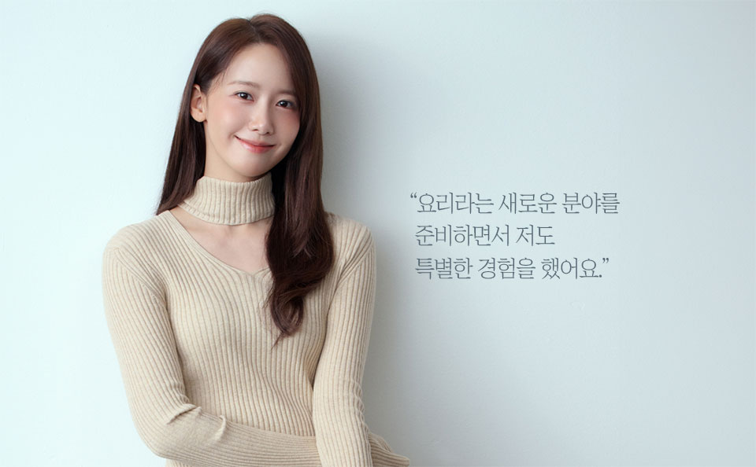
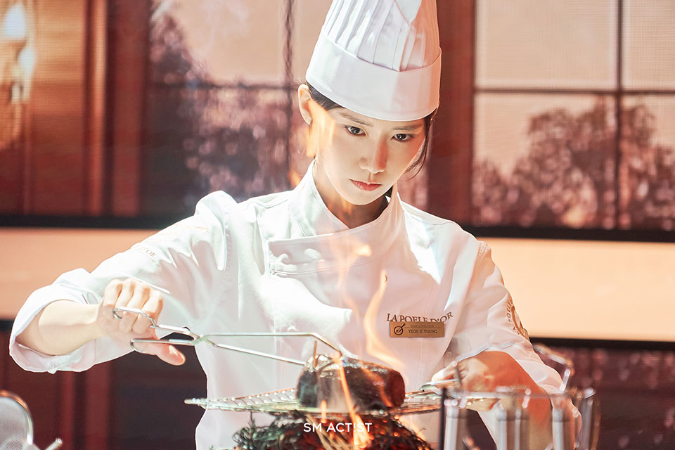
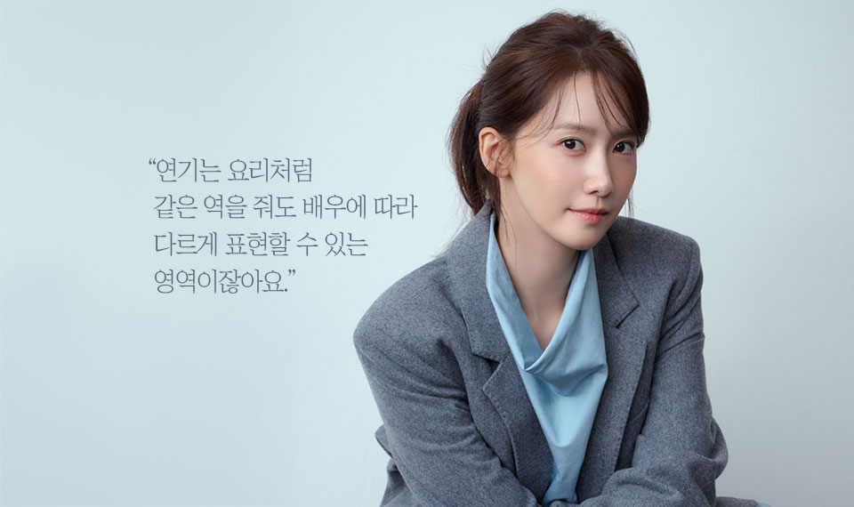

글. 이미영(조이뉴스24)
사진제공. SM엔터테인먼트
“임윤아의 요리 실력에 깜짝 놀랐어요. 손 대역도 거의 안 쓰고 95%
이상 직접 했어요.”
드라마 ≪폭군의 셰프>에서 자문과 메뉴 개발을 한 신종철 셰프는
‘제자’ 임윤아를 “진짜 제자로 키워보고 싶은 마음이 든다”며 요리
실력을 높게 평가했다. ‘요리왕’ 연지영 뒤에는 칼질부터 플레이팅까지
모든 과정을 시연한 ‘노력파’ 배우 임윤아가 있었다. 바쁜 스케줄
속에서도 요리를 배우고, 만들고, 또 아이디어를 내면서 ‘연기만을 위한
요리’가 아닌 카메라 밖 뿌듯한 성취와 즐거움을 느꼈다. 임윤아는
“요리를 스트레스로 느낀 적이 없다”면서 “셰프님들께 레시피를 따로
받아서 요리를 해볼까 싶다”고 활짝 웃었다. 완성된 창작물에서 오는
만족감은, 드라마가 끝난 뒤에도 그를 ‘요리의 세계’로 이끌었다.
“요즘 공항이나 식당에 가면 저를 ‘대령숙수’라고 부르는 분들이
계시더라고요. 어르신들은 ‘어쩜 요리를 그렇게 잘하니’라고 하세요. 많은
분들이 사랑해 주셨다는 걸 느낄 수 있었던 것 같아요.”
지난 9월 막을 내린 드라마 <폭군의 셰프>는 국내를 넘어 전
세계적으로 인기를 얻었다. 주연 배우인 임윤아 역시 그 반응을 피부로
느꼈다. 드라마의 인기에 감사하면서도, 캐릭터를 떠나보내기 아쉬운
나날을 보내고 있다.
“대본을 처음 받은 순간부터 지금까지 1년 가까운 시간을 지영으로
생각하고 지내왔어요. 그래서 <폭군의 셰프>를 떠올리면 유독
찡해지는 감정이 들어요. 내용이나 감정적으로 울컥한 부분도 있지만
요리라는 새로운 분야를 준비하면서 저도 특별한 경험을 했어요.”
<폭군의 셰프>는 최고의 순간 과거로 타임슬립한 셰프 연지영이 절대
미각의 소유자인 왕 이헌(이채민 분)을 만나며 벌어지는 서바이벌 판타지
로맨틱코미디 드라마다. 드라마 인기의 중심축엔 임윤아가 있다. 드라마가
초반 남자 주인공 교체로 삐걱댈 때도 자신의 자리를 단단히 지켰고,
요리를 배우며 진심으로 캐릭터에 스며들었다. 장태유 감독은 마지막 촬영
후 임윤아에게 “고생했다. 너의 에너지가 카메라에 많이 담겼다”고
칭찬했고, 윤아는 그 다독임에 눈물을 쏟아냈다. 그는 “나 자신
수고했다”고 했다.

연지영이 되고자 최선을 다한 날들이었다. 임윤아는 조선 최고의 요리사를
연기하기 위해 촬영 시작 3개월 전부터 본격적으로 요리 연습에 돌입했다.
지난해 대본을 받은 뒤 요리 경연 프로그램을 보거나 집에서 요리 연습을
했다던 임윤아는 "혼자서는 안 되겠다"라는 판단으로 요리학원에 다니면서
기본기를 잡았다. 그 결과 대부분의 조리 장면을 직접 소화하며 작품의
완성도를 끌어올렸다.
<폭군의 셰프>에서 자문과 메뉴 개발을 한 신종철 셰프가 헤드셰프로
있는 특급호텔 주방에서 요리를 직접 배우기도 했다. 신종철 셰프는
“요리를 배운 사람들도 하기 힘든 오므라이스를 한 번에 척 해내더라.
소질과 센스가 있고 열정이 대단하다”라고 칭찬했다.
“대역하는 분도 계셨지만 웬만하면 제가 다 해보려고 했어요. 요리하는
신은 90% 이상 제가 소화한 것 같아요. 촬영 전에 드라마에 나오는 메뉴를
직접 만들어보는 시연도 했어요. 장태유 감독님과 카메라 감독님, 푸드팀
그리고 자문을 맡아준 셰프님들과 함께 요리가 완성되는 과정을 지켜봤죠.
그 과정에서 저도 요리 과정을 숙지하고 아이디어도 내고, 카메라에 어떻게
담기는 것이 좋을지 파악하면서 익숙해질 수 있었어요. 드라마 속에서
요리하는 장면이 나올 때마다 의심 없이 대령숙수로 바라봐 주시는 것을
보니 나름 성공한 것 아닐까 생각해요.”
드라마에서 지영은 수비드 스테이크, 마카롱, 비프 부르기뇽, 오골계탕 등
다양한 요리를 선보였다. 임윤아는 “경합 장면을 찍을 때 배우들과 ‘이게
제일 맛있다’평가하는 재미가 있었다”며 “드라마의 시작을 알리는 고추장
버터 비빔밥이 가장 기억에 남고, 된장 파스타는 개인적으로 레시피를
받아서 집에서 해보려 한다”고 활짝 웃었다.

드라마 '폭군의 셰프' 스틸컷
임윤아는 <폭군의 셰프>로 현장을 이끄는 책임감과 함께 연기에 대한
깨달음도 얻었다고 했다. 그는 ‘먹는 사람이 어떤 사람인지 모르고는
음식을 만들 수 없다’는 지영의 대사를 곱씹었다.
“먹는 사람을 생각하는 셰프로서의 마음을 대변한 대사인데, 그 대사를
하면서 저는 오히려 배우로서 앞으로 ‘뭘 보여드릴 수 있을까?’라고 제
자신을 돌아보게 됐어요. 셰프로서 연기를 하다 보니까, ‘저라는 사람은
어떤 모습을 보여드릴 수 있을까’, ‘만들 수 있는 요리는 어떤 것일까’라는
지점으로 바라볼 수 있는 시야가 생겼어요. 연기는 요리처럼 같은 역을
줘도 배우에 따라 다르게 표현할 수 있는 영역이잖아요. 제가 만들 수 있는
요리에 대한 고민과 함께 대중들이 ‘어떻게 맛 봐주실까?’라는 기대감도
생기게 된 것 같아요.”
<폭군의 셰프>를 성공적으로
이끈 임윤아에 대한 반응도 호평 일색이다. 임윤아는 가수 데뷔 직전
드라마 <9회말 2아웃>으로 연기 활동을 먼저 시작했고, 2007년 그룹
소녀시대의 멤버로 데뷔해 ‘국민 걸그룹’의 센터로 큰 인기를 모았다.
‘연기돌’에 대한 선입견을 뒤로 하고 꾸준히 연기 활동을 병행해왔다.
<폭군의 셰프>에서는 차근차근 쌓아온 내공으로 맛깔스러운 캐릭터를
탄생시켰고, 코믹과 로맨스 다 되는 ‘연기 맛집’임을 증명했다.

임윤아는 “끈기 있는 연지영의 모습에서 그간 다양한 활동을 하며 저만의
색을 지켰던 제 모습을 봤다”라고 활짝 웃었다. 자신의 커리어를 ‘뷔페’에
비유하며 “뷔페가 다양한 메뉴를 갖추고 있듯 앞으로도 더 많은 캐릭터와
색다른 메뉴를 보여주고 싶다”고 했다.
성적표도 찬란하다. 임윤아는 <빅마우스>, <킹더랜드>에 이어
<폭군의 셰프>까지 3연속 흥행 기록을 세웠다. “세 작품 연속으로
모두 좋은 성적이 나왔다는 점에서도 저도 신기해요. <폭군의
셰프>도 넷플릭스에서 1위를 했지만 앞서 <킹더랜드>도 1위를
했잖아요. 두 작품 모두 전 세계에서 사랑을 받았다는 게 정말 감사해요.
좋은 작품을 만난 것도 있지만, 무엇보다 제작진과 배우들과의 호흡이
좋아서 이런 결과가 나온 것 같아요.”
배우로서는 이러한 연속 흥행이 부담으로 작용하진 않을까. “작품을 선택할
때 성적을 먼저 생각하지 않아요. 성적은 내 영역이 아니라고 생각해요.
앞으로도 본능적으로 끌리는 작품이라면 선택할 거예요. 그런 선택이
지금처럼 좋은 성적을 만들어 간다면 더할 나위 없이 좋겠지만 그렇지
못하더라도 그 선택을 한 저만의 성장이 또 있을 것이기 때문에 크게
부담은 느끼지 않아요.”
임윤아는 내년이면 데뷔 20주년이 된다. 임윤아의 필모그래피는
미완성으로, 아직도 채워나갈 것이 많다. 임윤아는 다채로운 신메뉴들을
계속 선보이겠다고 했다. “‘어떤 배우가 되고 싶냐’라는 질문을 받으면
‘제가 연기 하는 캐릭터를 볼 때 끄덕일 수 있는 배우가 되면 좋 겠다’고
늘 대답해 왔어요. 이제 그 끄덕임을 해주는 것 같아서 뿌듯한 마음이에요.
‘너 잘 걸어가고 있다’고 증명 받은 것 같아 감사합니다. 차기작은
정해지지 않았지만, 새로운 모습을 보여드릴 수 있다면 어떤 작품이든
열어두고 싶어요. 앞으로 항상 잘하는 것도 좋겠지만 의외성을 드러내는
작품에도 도전해 보고 싶습니다.”